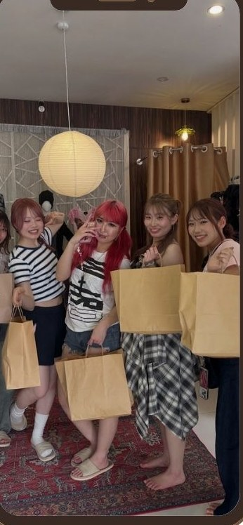
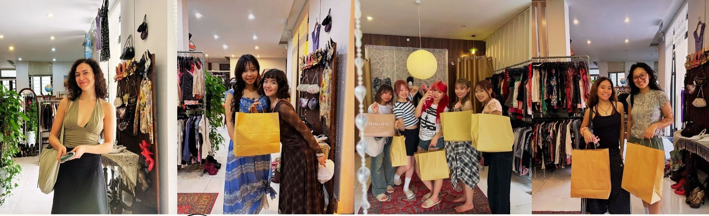
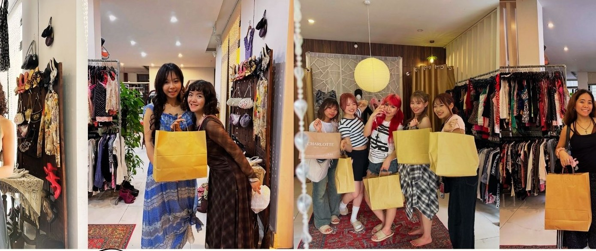

Y2K Core
Fitted, playful, camera-ready.
Mesh, lace, denim, mini bags, soft color, and silhouettes that feel like early-2000s memory without costume energy.
For the ones who do not want another souvenir

Yên Mây is a small vintage room in Da Nang where every piece has to earn its place: fabric, proportion, condition, and the quiet feeling that it belongs to someone specific.
The rack changes, but the filter stays sharp: easy to wear, hard to find, and specific enough to feel like yours before you buy it.

Mesh, lace, denim, mini bags, soft color, and silhouettes that feel like early-2000s memory without costume energy.
Silk, linen, cotton, embroidery, neutral tones, and quiet textures that stay beautiful outside trend cycles.

Light pieces made for movement, heat, photos, and the kind of travel wardrobe that does not feel disposable.

We do not need to invent a dramatic past for every item. The value is in the selection: why this fabric, this cut, this condition, this mood made it through.
I don't know where it's been. I know exactly why I chose it.
Locals can DM to reserve. Travelers should save the map, come in person, and try the piece before it becomes someone else's.